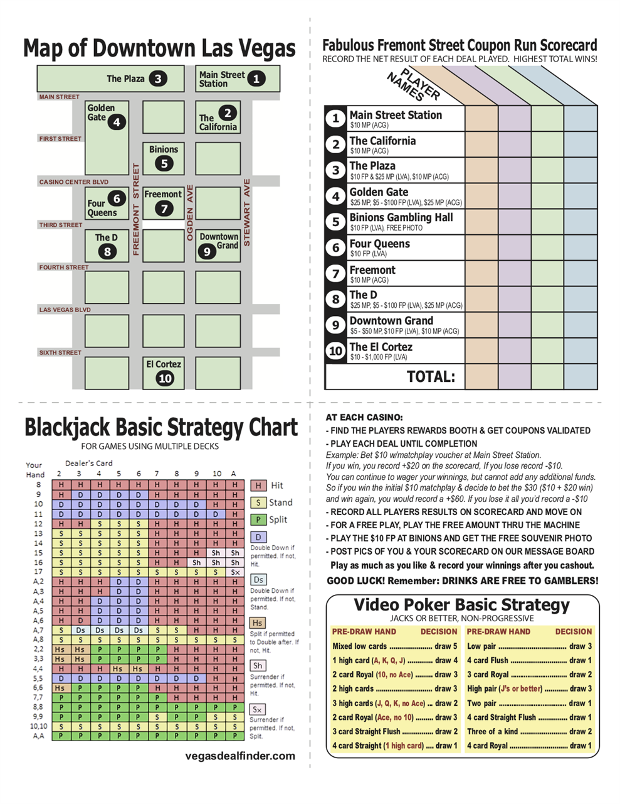

<template>
  <div class="MainContainer">
    <div class="TitleImg center">
      
    </div>
    <div class="single-wide">
      <h1>Fabulous Fremont Street Coupon Run Scorecard </h1>
      <button type="button" name="button" click.capture="printButtonClick()">Click here to Print!</button>
      
      <h2>Coupon Run Tip:</h2>
      <p>Do the coupon run with a small group of people and make a game out of it. Find a fun prize for the winner and make the loser buy dinner... or at least the next drink. Track the wins at loss totals from each casino on the printable scorecard. and tally to see who wins the most money. Trust me, if you play just the coupons and no other bets then you will win!! For another fun play, add $5 to your totals for every free drink each person receives while playing their free play or matchplay coupons.  </p>
      <h2>Free Drinks </h2>
      <p>When attempting to get free drinks while using coupons can sometimes be tricky. Your only at the tables or machines for a few moments so timing is everything. Make sure you know where the cocktail waitress is before determining where your going to play your matchplay. For Freeplay coupons we always recommend you head right to the video poker bar and play your free $5-10. There you can quickly get a free drink from the bartender. Put your card in, transfer over your freeplay money to that machine and your gambling! If you don't rush playing through your freeplay money you might just be around long enough to get another free drink for your walk to the next casino. If you do double your money,  then you may want to cashout and record a winning amount on your scorecard and move on to the next deal....with your free drink of course. </p>
    </div>
  </div>
</template>
